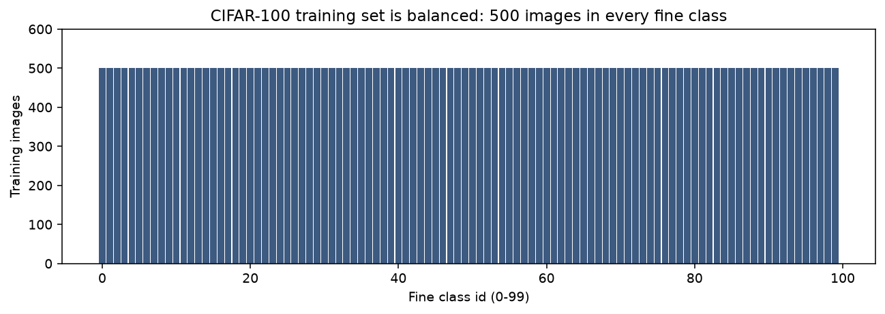
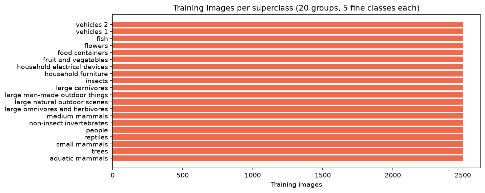
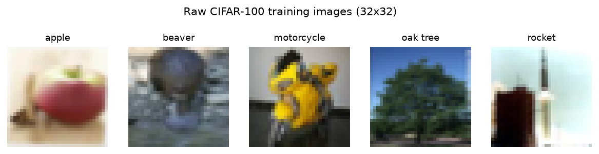
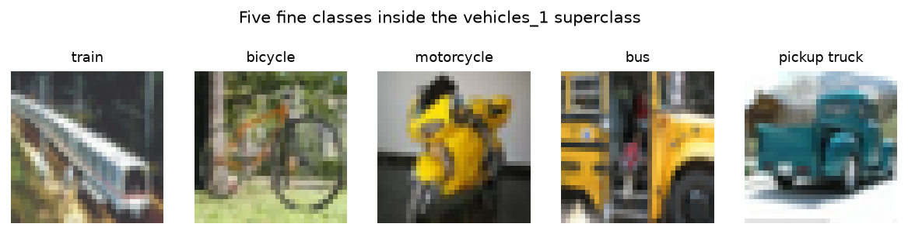
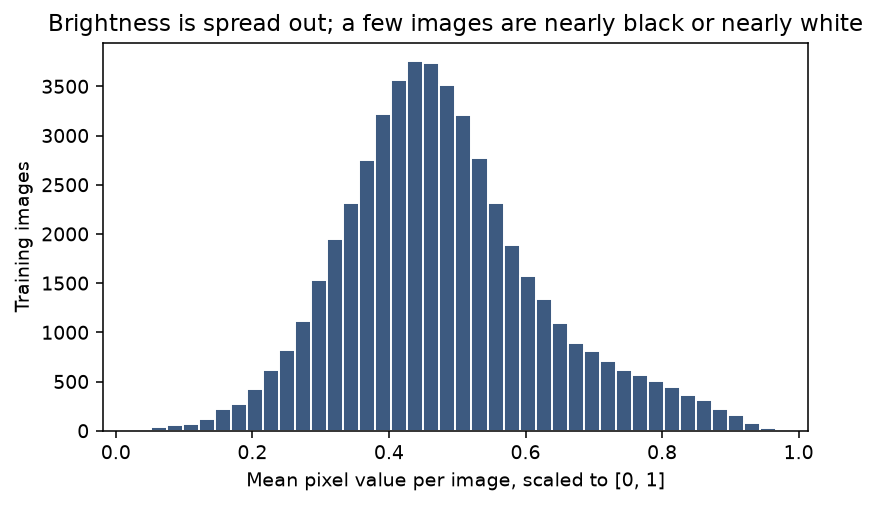
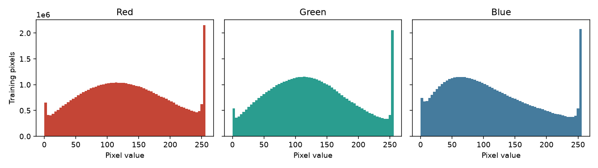
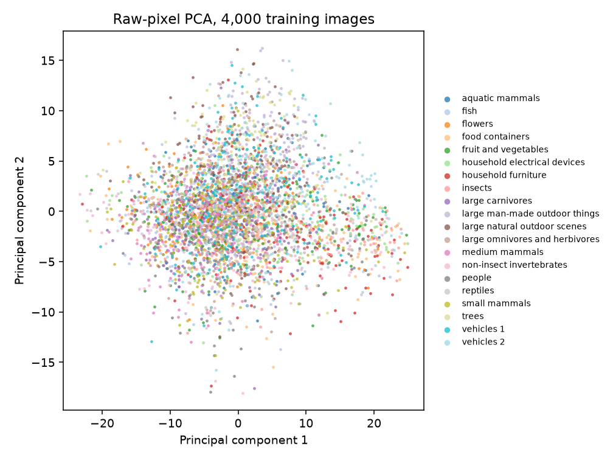
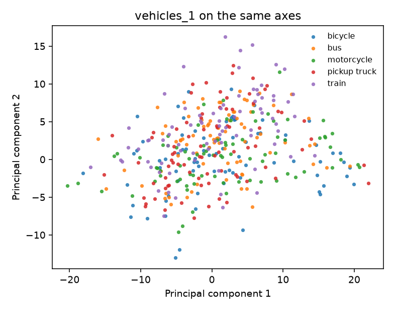
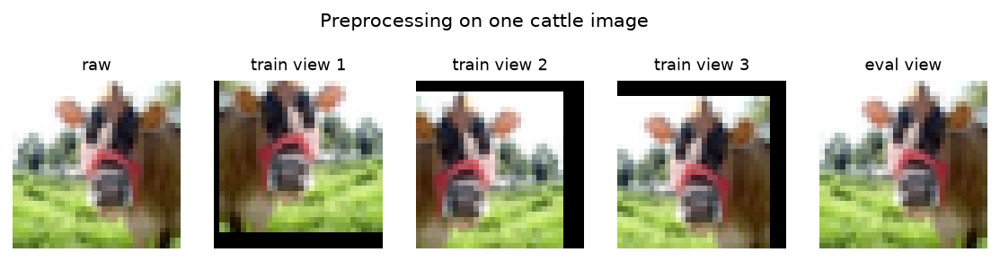

October 2026
| Paper | Decoupled Knowledge Distillation |
| Authors | Borui Zhao, Quan Cui, Renjie Song, Yiyu Qiu, and Jiajun Liang |
| Venue | CVPR 2022, pp. 11953–11962 |
| Dataset | CIFAR-100, original release |
This report covers the literature review and the exploratory data analysis for the mid evaluation. No model has been trained. Numbers in Section 1 are the authors’ published results. Numbers in Section 2 were computed from the CIFAR-100 files in this project.
A large convolutional network is usually more accurate than a small one, and it is also more expensive to store and to run. Buciluă, Caruana, and Niculescu-Mizil framed that tradeoff in 2006 as model compression: train an expressive model, then train a smaller model to imitate it, so the small model can be deployed where the large one does not fit [13]. Deep residual networks made the gap concrete. He et al. showed that very deep residual nets set the accuracy standard on image classification, and they also made it obvious that the winning model is not the model one wants on a phone or under a tight latency budget [14].
Hinton, Vinyals, and Dean turned the compression idea into the training recipe later papers call knowledge distillation [2]. A teacher network is trained in the usual way. A student, usually smaller, is trained with two signals at once: the hard class label, and the teacher’s soft probability vector. The soft vector is the part they called dark knowledge. A picture of a truck should not only be labeled “truck.” The teacher may also put a little mass on “car” and almost none on “apple,” and that ranking is useful. They control it with a temperature inside the softmax. At the distribution is peaked. At the small probabilities on the wrong classes become visible, and the student is asked to match them with a KL divergence.
The extra cost is paid at training time. At inference the teacher is discarded and the student runs alone. If the student is only a few points behind the teacher, most of the accuracy has been kept at a fraction of the compute. That is the setting of this project: CIFAR-100 classification, a ResNet324 teacher, a ResNet84 student, and a loss that moves the student’s accuracy toward the teacher’s without adding anything to the forward pass at test time.
After Hinton et al., the literature split into two families. The DKD paper states this split directly [1].
Logit distillation stays on the teacher’s output vector. The student never sees internal activations. Later logit methods mostly changed the training scheme around that same KL term, rather than rewriting it. Deep mutual learning trains two networks together so each one is the other’s teacher [9]. Teacher-assistant distillation inserts a mid-sized network when the teacher is much larger than the student, on the argument that a large capacity gap makes the soft labels hard to copy [10]. Cho and Hariharan studied the related failure mode that a bigger teacher is not always a better teacher, and they tried early-stopped teachers as a fix [11]. These papers keep the classical KD loss. They change who produces the soft labels, or when.
Feature distillation matches intermediate maps instead of the output vector. FitNets regress a student’s hidden layer onto a teacher’s hint layer, with a small regressor in between because the shapes differ [3]. Attention transfer matches spatial attention maps rather than the raw features [4]. A later line matches relations instead of coordinates: relational knowledge distillation compares distances and angles between samples [5], and contrastive representation distillation pulls a student’s representation toward the teacher’s representation of the same image and away from other images [6]. Overhaul of feature distillation and ReviewKD are stronger feature methods of the same kind. OFD redesigns the connector that lines the two feature maps up [7]. ReviewKD passes the teacher’s features through a review mechanism across stages [8]. On CIFAR-100 these methods beat classical KD. They also cost more while training, because the student has to materialize extra maps, and several of them add parameters that exist only for the distillation loss.
Zhao et al. start from a complaint about that state of affairs [1]. Logits sit at a higher semantic level than a mid-network feature, so a logit method ought to be competitive. In practice it was not, and most new papers had stopped working on it. Their claim is that the weak results are not evidence that logits are a poor target. They are evidence that the classical KD loss couples two different kinds of information and then suppresses the useful one on the samples where the teacher is most sure.
Take one training image whose true class is , and write the teacher’s softmax as . Split that vector into two questions.
How much mass is on the true class, versus everything else? Call this the binary pair .
Among the remaining classes, how is the leftover mass arranged? Call this .
The classical KD loss is one KL between the full softmaxes. Zhao et al. expand that KL and show it is exactly TCKD is the KL on the binary pair. NCKD is the KL on the non-target distribution. The familiar loss was already those two terms, with the second term multiplied by how much probability the teacher did not put on the true class [1].
They then run the two terms separately on CIFAR-100, with ResNet324 as the teacher and ResNet84 as the student, and with every loss weight set to 1. The student trained with labels alone reaches 72.50% top-1. Classical KD, both terms, reaches 73.63% (). TCKD alone falls to 68.63% (). NCKD alone reaches 74.26% (), which is better than classical KD [1, Table 1]. The dark knowledge Hinton described lives in the non-target classes, and the target term by itself can hurt.
That split also explains the coupling. If the teacher is very confident, is near 1 and is near 0, so NCKD is almost switched off. Those are the samples where the teacher’s ranking of the wrong classes is most trustworthy, and they are the samples the classical loss downweights. A second coupling is that TCKD and NCKD share one implicit weight, so the two terms cannot be turned separately.
Decoupled knowledge distillation replaces the factor with a constant , and gives TCKD its own constant : The student architecture does not change. At inference there is no teacher and no extra head. On the same ResNet324 ResNet84 pair, fixing and replacing the coupled weight by moves accuracy from 73.63% to 74.79%. Raising to 8 reaches 76.32%. With , sweeping peaks at (76.32%) and drops if the target term is removed (75.30% at ) or weighted too heavily (75.42% at ) [1]. The paper’s main CIFAR-100 table, averaged over five trials, lists the same pair as teacher 79.42%, label-only student 72.50%, classical KD 73.33%, and DKD 76.32% [1, Table 6]. The 73.33 and the 73.63 above are both reported by the authors: Table 1 uses unit weights on each term, and Table 6 is the standard KD comparison.
Two limits bound what this project will claim. Logits do not tell a detector where an object is. On MS-COCO the authors combine DKD with ReviewKD rather than using DKD alone [1]. This project does not reproduce ImageNet or COCO. The CIFAR-100 classification result is the result set up for reproduction.
The training recipe, once training starts, is the authors’
configuration for this pair together with the library defaults for the
DKD loss. SGD, 240 epochs, batch size 64, learning rate 0.05, momentum
0.9, weight decay
,
and learning-rate drops by a factor of 0.1 at epochs 150, 180, and 210.
The loss uses cross-entropy weight 1,
,
,
temperature 4, and a 20-epoch warmup on the distillation term. Those
values are the ones in
configs/cifar100/dkd/res32x4_res8x4.yaml and in
CFG.DKD in the reference repository, and they are the
pair the paper reports as best for this student. The official repository
is a reference for those numbers and for the pretrained teacher. The
loss and the data loader in this project are written locally. Running
the authors’ training script and submitting the log is not the
reproduction.
One teacher–student pair on CIFAR-100: ResNet324 into ResNet84. The reproduction comparison is top-1 accuracy against the paper’s number for that pair, and against a classical-KD student trained on the same schedule. The additional experiment, which is outside this mid evaluation, is the ablation that separates the two terms: TCKD only, NCKD only, DKD, and vanilla KD, on the same pair and the same schedule. Deployment, later, is the trained student behind a small web app. None of that has been run. This report stops at the paper and the data.
CIFAR-100 is the dataset released with Krizhevsky’s tiny-images
report [12]. This project uses the original Python version, not a subset
and not a folder of JPEG files. The archive on disk is
data/cifar-100-python.tar.gz. Its MD5 is
eb9058c3a382ffc7106e4002c42a8d85, the checksum published
for the official file. After extraction, the loader reads three files:
train (50,000 images), test
(10,000 images), and meta (the 100 fine names
and the 20 superclass names). There is no validation file.
Each image is one row of 3,072 unsigned bytes, because
.
The row is not stored dot by dot. The first 1,024 bytes are
the red plane, in row-major order; the next 1,024 are
green; the last 1,024 are blue. The class id and the
filename sit in parallel lists, not inside those 3,072
bytes. The project loader reshapes a row with
reshape(3, 32, 32) and then
transpose(1, 2, 0), which yields a
RGB image. The same read is implemented in
src/data/cifar100.py. It does not call torchvision and it
does not call the authors’ repository. The notebooks
notebooks/00_eda_cifar100_full.ipynb and
notebooks/01_cifar100_pipeline.ipynb are the exploratory
analysis and the preprocessing pipeline.
Table 1 is computed from the extracted files. Every fine class has 500 training images and 100 test images. Every superclass has 2,500 training images, which is five fine classes. The minimum and the maximum are the same number, so there is no majority class and no empty class. Figure 1 is the per-class training histogram. Figure 2 is the superclass histogram. A fine class belongs to exactly one superclass. The classifier will predict the 100 fine labels. The superclass is how related mistakes can be described later: confusing a bicycle with a motorcycle is a different error from confusing a bicycle with an apple.
A standard pipeline checklist would hold out 10–20% of the training images for validation. This project does not. The paper trains on the full official training set and reports accuracy on the official test set. Holding out 5,000 images would train the student on 45,000 images, and the result would no longer be comparable to the published number. The hyperparameters for this pair are already fixed by the paper.
| Quantity | Value |
|---|---|
| Training images | 50,000 |
| Validation images | 0 |
| Test images | 10,000 |
| Fine classes | 100 |
| Superclasses | 20 |
| Fine classes per superclass | 5 |
| Image shape | , uint8 |
| Pixel range | 0 to 255 |
| Training images per fine class | 500 |
| Test images per fine class | 100 |
| Training images per superclass | 2,500 |


Figure 3 shows one raw training image from five
fine classes in different superclasses: apple, beaver, motorcycle, oak
tree, and rocket. At
the object is recognizable and most of the texture is gone. Figure 4
shows the five fine classes inside vehicles_1: bicycle,
bus, motorcycle, pickup truck, and train. They share a coarse label and
they are still five different categories. DKD, like the paper’s
CIFAR-100 setup, classifies the 100 fine labels. The coarse labels are
context for the errors we expect, not a second training target.
The resolution is a property of the 2009 release. ResNet324 and ResNet84 take inputs, so the images are left at that size.


vehicles_1. Same
superclass, different labels.There is no missing-pixel problem. Every image has 3,072 pixels, the dtype is uint8, and the only values present are the integers 0 through 255. A scan of both splits found no all-black image, no all-white image, no flat-color image, and no image whose red, green, or blue channel is entirely zero. Labels are integers in for the fine task and for the coarse task, and every id occurs.
Brightness does vary. The per-image mean on the training set, with pixels scaled to , has a 1st percentile of 0.168, a median of 0.464, and a 99th percentile of 0.872 (Figure 5). On the 0–255 scale, the darkest training image has mean 7.12 and the brightest has mean 246.56. Two training images have mean below 10, and six have mean above 245. Those images stay in the set. They are part of the release the paper evaluated.

The same 3,072 bytes sometimes occur more than once. Fourteen training rows are repeated, and nine of those repeats carry two different fine names. Two test rows are repeated. Ten images occur in both the training file and the test file: four pairs share a fine name, and six do not. The rows are kept. Removing them would make the test set different from the official release the paper evaluated.
Training will subtract a per-channel mean and divide by a per-channel standard deviation, after scaling pixels from to . Recomputing those moments on the full training set gives means , , and standard deviations , , . The recipe constants are , , and , , . They agree to three decimals, so training will keep the recipe values. The mean of every training pixel across all three channels is .
Figure 6 is the histogram of raw pixel values in each channel. The distributions cover the full 0–255 range. They are not piled up at 0 or at 255, so the set is not a collection of clipped black or white frames. The per-image brightness histogram cannot show that, because averaging an image hides a single channel.

Each training image can also be treated as one list of 3,072 numbers, with no network and no learned features. Principal component analysis on a fixed sample of 4,000 training images, after subtracting the average value at each pixel position, finds the directions that keep the most of that variation. The first axis keeps 32.5% and the second keeps 9.4%. The first 10 axes keep 68.4%, the first 50 keep 85.8%, and 85 axes are required to reach 90%. Two axes are therefore a partial view, which is why the plot is read for overlap rather than treated as a complete map of the data.
Figure 7 colors those 4,000 images by
superclass. Figure 8 places the five fine classes of
vehicles_1 on the same two axes. The groups overlap in both
plots. A single straight cut through these raw pixels does not separate
the classes. A perceptron, whose decision boundary is one straight cut,
is the wrong classifier for this view of the data.
The networks in this project are ResNet324 and ResNet84. They are convolutional networks, and their decision is not that straight cut. The plot describes the pixels. It does not choose the architecture: that pair is the one in the paper. The 4,000 images are only the drawing. The counts in Table 1 use all 60,000.


vehicles_1 classes on the same two
axes. The groups overlap.The paper reports CIFAR-100 top-1 accuracy, averaged over five trials in the main table [1]. That is the metric this project will use for the reproduction and for the later ablation.
It matches the label distribution. Every fine class has the same number of training images and the same number of test images, so accuracy is not carried by one large class, and a macro-average would rank models in the same order. The decision the paper makes, and the decision the later demo will make, is one label out of 100. Top-5 accuracy is a usual extra number on ImageNet, where 1,000 classes make the second guess informative. The DKD CIFAR tables do not use it, and this project will not add it as a second headline number. If a later error analysis is useful, the superclass file can count how often the predicted fine class sits in the correct superclass. That is a diagnostic.
Labels stay integers from 0 to 99. Cross-entropy and the DKD loss both index the logit vector with that integer. A one-hot vector of length 100 is not built.
The image transforms follow the CIFAR recipe used with this paper.
Training: pad by 4 pixels with zeros, crop a random window, flip left–right with probability , divide by 255, then subtract the recipe mean and divide by the recipe standard deviation.
Evaluation: divide by 255 and normalize. No crop and no flip.
Both views are float32 arrays in channel-first order,
shape
.
A training batch is 64 of those arrays, shape
,
with a label vector of shape
.
The training indices are shuffled at the start of each epoch. The test
indices stay in stored order. Figure 9 applies the
training transform three times to one image and the evaluation transform
once. The figure undoes the normalization so the shift and the mirror
are visible. A crop that touches the padded border shows a black edge,
which is the zero fill in the recipe.
The pipeline stops at these two views. No further augmentation is applied.
The functions preprocess_train and
preprocess_eval in src/data/cifar100.py are
this project’s implementation of the two views. They were checked
against the published recipe. They were not imported from the authors’
code.

The literature case for the project is Equation (1): classical KD already contains a target term and a non-target term, and the non-target term is suppressed when the teacher is confident. Equation (2) gives each term its own weight. On the pair this project will train, the authors’ best reported setting is , , with top-1 accuracy 76.32%.
The data case is that the files on disk are the original CIFAR-100 release: 50,000 training images, 10,000 test images, 100 balanced fine classes, pixels, and no validation split. The measured channel moments match the recipe constants to three decimals. On a sample of raw pixels, the classes overlap, so a straight cut does not separate them. A few exact copies sit in both files, some under two different names, and they are retained so the test set stays the official one. Preprocessing is the paper’s pad, crop, horizontal flip, and normalization, with integer labels and batches of 64. Training has not started.
99
B. Zhao, Q. Cui, R. Song, Y. Qiu, and J. Liang, “Decoupled knowledge distillation,” in Proc. IEEE/CVF Conf. Comput. Vis. Pattern Recognit. (CVPR), 2022, pp. 11953–11962.
G. Hinton, O. Vinyals, and J. Dean, “Distilling the knowledge in a neural network,” arXiv:1503.02531, 2015.
A. Romero, N. Ballas, S. E. Kahou, A. Chassang, C. Gatta, and Y. Bengio, “FitNets: Hints for thin deep nets,” in Proc. Int. Conf. Learn. Represent. (ICLR), 2015.
S. Zagoruyko and N. Komodakis, “Paying more attention to attention: Improving the performance of convolutional neural networks via attention transfer,” in Proc. Int. Conf. Learn. Represent. (ICLR), 2017.
W. Park, D. Kim, Y. Lu, and M. Cho, “Relational knowledge distillation,” in Proc. IEEE/CVF Conf. Comput. Vis. Pattern Recognit. (CVPR), 2019.
Y. Tian, D. Krishnan, and P. Isola, “Contrastive representation distillation,” in Proc. Int. Conf. Learn. Represent. (ICLR), 2020.
B. Heo, J. Kim, S. Yun, H. Park, N. Kwak, and J. Y. Choi, “A comprehensive overhaul of feature distillation,” in Proc. IEEE/CVF Int. Conf. Comput. Vis. (ICCV), 2019.
P. Chen, S. Liu, H. Zhao, and J. Jia, “Distilling knowledge via knowledge review,” in Proc. IEEE/CVF Conf. Comput. Vis. Pattern Recognit. (CVPR), 2021.
Y. Zhang, T. Xiang, T. M. Hospedales, and H. Lu, “Deep mutual learning,” in Proc. IEEE/CVF Conf. Comput. Vis. Pattern Recognit. (CVPR), 2018.
S. I. Mirzadeh, M. Farajtabar, A. Li, N. Levine, A. Matsukawa, and H. Ghasemzadeh, “Improved knowledge distillation via teacher assistant,” in Proc. AAAI Conf. Artif. Intell., 2020.
J. H. Cho and B. Hariharan, “On the efficacy of knowledge distillation,” in Proc. IEEE/CVF Int. Conf. Comput. Vis. (ICCV), 2019.
A. Krizhevsky, “Learning multiple layers of features from tiny images,” Tech. Rep., University of Toronto, 2009.
C. Buciluă, R. Caruana, and A. Niculescu-Mizil, “Model compression,” in Proc. 12th ACM SIGKDD Int. Conf. Knowl. Discovery Data Mining (KDD), 2006.
K. He, X. Zhang, S. Ren, and J. Sun, “Deep residual learning for image recognition,” in Proc. IEEE Conf. Comput. Vis. Pattern Recognit. (CVPR), 2016.